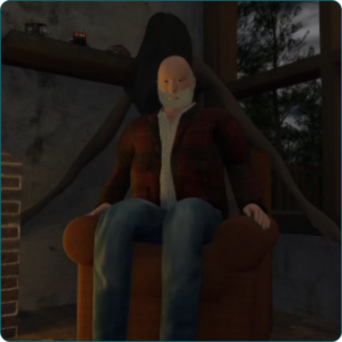

Ex Nihilo
Description du projet :
Un projet d'animation dont je me suis occupé à créer l'environnement complet
des deux scènes, à l'exception de l'horloge. J'ai ensuite fait une partie de
l'animation pour ensuite créer le résultat final (à voir tous les crédits à la
fin de l'animation).

Membres de l'équipe :
Jean-Marie Gariépy :
- Modélisations et animations des personnages
- Modélisation de l’horloge
- Montage sonore et effets
Roméo Girard :
- Modélisation et animation du garçon
- Effets des percides et transitions
Audrey Langlois :
- Modélisation et animation du chalet et d’Ex Nihilo
- Modélisation de la forêt
- Montage sonore et effets du texte dans l’intro